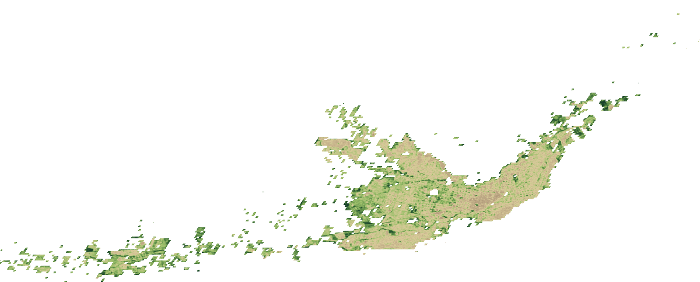
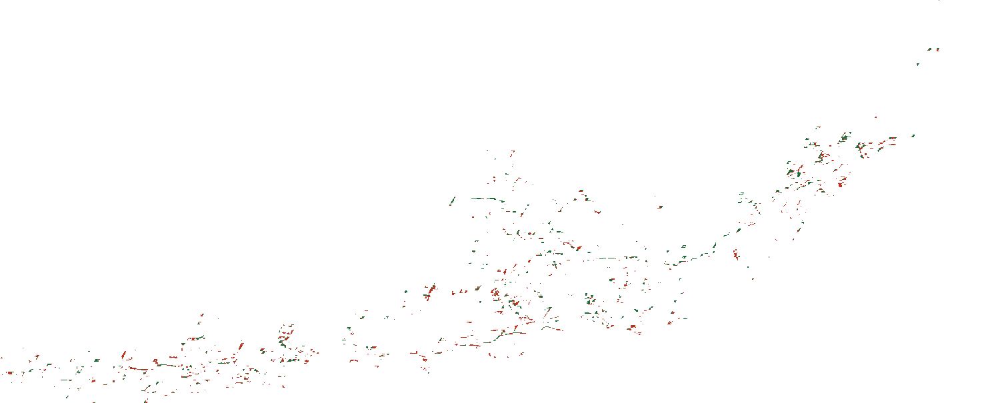
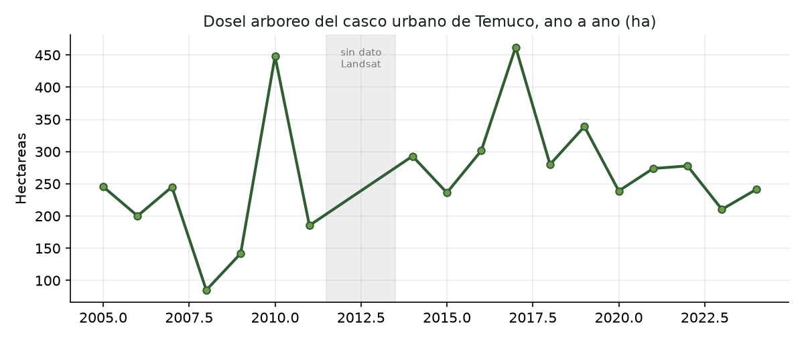

Documentar, cuantificar y visibilizar la pérdida de árboles urbanos —talas, podas severas y áreas verdes que desaparecen— cruzando imágenes satelitales históricas con la observación de los vecinos.

2005 · NDVISerie anual real 2005–2024 (Google Earth Engine, verano austral; 2012–2013 sin dato Landsat). Verde intenso = más dosel; tonos claros = suelo construido. Desliza para ver año a año. Para navegar sobre las calles, mira el mapa interactivo.
Frente a las constantes talas, podas severas y pérdida de áreas verdes en Temuco, la observación de los vecinos suele quedarse sin respaldo cuantitativo. Este proyecto le da una base técnica y científica a esa vigilancia comunitaria.
No basta con saber cuánta cobertura arbórea se ha perdido: buscamos entender por qué está ocurriendo. El análisis cruza los datos para evidenciar si existe una relación directa entre la desaparición de los árboles y la expansión inmobiliaria, la construcción de carreteras y otras transformaciones del paisaje urbano —como ocurrió con las aperturas viales hacia Pablo Neruda en los ejes de Avenida Imperial y Caupolicán.
Monitorear, medir y visibilizar la pérdida del arbolado y su impacto en Temuco, integrando herramientas satelitales de análisis histórico con la participación ciudadana activa para proteger y gestionar el patrimonio natural urbano.
Aplicar teledetección (índices de vegetación) para calcular la cobertura de dosel perdida en intervalos de cinco años, pasando del conteo manual "árbol por árbol" a una medición automatizada de todo el territorio urbano.
Identificar los sectores de mayor cambio con mapas de "antes y después", demostrando la relación entre las obras de conectividad vial, el auge inmobiliario y la eliminación de áreas verdes consolidadas.
Centralizar el material fotográfico, las denuncias por podas y talas, y las mediciones de los vecinos a través de la plataforma del Observatorio.
Traducir los datos técnicos en impactos cotidianos: pérdida de sombra, efecto en la temperatura de los barrios, e identificación y protección del arbolado patrimonial restante.
La tecnología entrega las métricas; la comunidad aporta el contexto. El proyecto vive en el cruce de ambas.
Observar la ciudad desde arriba. Analizando 20 años de imágenes, algoritmos detectan automáticamente el follaje y generan "mapas de calor" que muestran dónde estaba el verde y dónde hoy hay cemento.
Un repositorio vivo impulsado por los vecinos: fotografías, denuncias en tiempo real de talas injustificadas y trabajo de campo —como las mediciones de tronco y copa en Caupolicán.
La integración de los datos. Cuando el Observatorio recibe una alerta —por ejemplo, los árboles eliminados por la carretera en Av. Imperial— el equipo técnico va al registro satelital y extrae cuántos metros cuadrados de sombra se perdieron en esa obra. Así, la indignación ciudadana se convierte en evidencia técnica concreta.
Cada corte usa el mejor sensor disponible manteniendo comparabilidad, siempre en ventana de verano austral para captar el dosel pleno.
El método completo está en el plan técnico; esto es lo esencial.
Cada píxel se evalúa por cuánta luz infrarroja refleja la vegetación sana frente a la luz roja que absorbe:
NDVI = (NIR − Rojo) / (NIR + Rojo)El NDVI no distingue un árbol de un césped. Se combina umbral alto + persistencia estacional (el pasto se agosta, el árbol no), textura del dosel y, donde exista, altura de copa (LiDAR / GEDI). Las mediciones ciudadanas calibran y validan.
Restando rásteres se obtiene el ΔNDVI: el mapa de calor de pérdida. Una matriz de transición cuantifica en hectáreas cuánto dosel pasó a superficie construida, barrio por barrio.
ΔNDVI = NDVI₂₀₂₅ − NDVI₂₀₀₅Procesamiento en la nube sobre el archivo histórico completo, con compuestos mediana para vencer la nubosidad de Temuco.
El área de dosel eliminada (m²) es una medida directa de la sombra que desaparece de veredas y bandejones al mediodía.
La banda térmica de Landsat (temperatura superficial) compara barrios que perdieron árboles con los que los conservan: cuántos grados sube la calle.
El arbolado patrimonial restante se cataloga y monitorea con las imágenes más recientes para alertar cambios y exigir su protección.
La Ordenanza Municipal N°004/2021 de Temuco ("árboles urbanos y áreas verdes en bien nacional de uso público") no solo prohíbe la tala no autorizada: obliga al municipio a mantener una plataforma pública de arbolado. El Observatorio se ancla ahí.
El municipio debe mantener un catastro forestal y una plataforma de acceso público que cuantifique especies mediante sistemas digitales y reciba comentarios y recomendaciones de los vecinos. Es el mandato legal exacto de una herramienta como este Observatorio.
Un grupo de vecinos puede solicitar declarar un árbol patrimonial presentando un informe con especie, ubicación, criterio y firmas. El Observatorio prepara justo esa evidencia.
Es responsabilidad municipal monitorear el estado del arbolado. El análisis satelital + terreno es el instrumento que la ordenanza exige.
Los habitantes deben denunciar destrozos a la DMAO, Carabineros o Juzgado de Policía Local. Las fotos georreferenciadas del Observatorio son ese medio de prueba. Multa: 1 a 5 UTM por evento.
Toda obra pública que afecte áreas verdes debe reconstruir a su cargo lo destruido. Base para exigir reposición en aperturas viales como Imperial y Caupolicán.
Art. 32° — cuánto vale un árbol talado. La ordenanza fija una fórmula para el cobro por daño. Cruzándola con los polígonos de pérdida de dosel, el Observatorio puede expresar la deforestación en dinero, no solo en m².
Vt = Vb · fsanidad · fubicación · fsingularidadSe complementa con el Plan Regulador (2010/2015, en modificación), el PLADECO (actualizándose a 2027-2032), el SECAP 2020, la Ley 18.695 (áreas verdes = función municipal) y el estándar SIEDU de 10 m²/hab. El proyecto interopera con el IDE Municipal de Temuco y el Catastro INE de Áreas Verdes 2024.
Cada aporte de la comunidad se convierte en evidencia. Tu denuncia queda georreferenciada y, junto al análisis satelital y la Ordenanza 004/2021, fortalece el argumento para exigir protección.
Análisis del casco urbano construido de Temuco (≈4.308 ha, zonas edificadas GHSL), año a año, con Landsat homogeneizado (Roy et al. 2016), altura de dosel y Google Dynamic World para separar árbol de pasto.
Temperatura de superficie (Landsat, veranos 2020–2024) en el casco urbano, según lo que pasó con el dosel entre 2005 y 2025. La progresión es directa: cada paso de pérdida de arbolado suma calor. Perder el árbol cuesta +1,4 °C; quedarse sin dosel, hasta +2,3 °C frente a conservarlo.
Ojo con la escala: esta es la temperatura promedio de la superficie a nivel de barrio (satélite, 30 m). A ras de piso, la sombra de un árbol enfría bastante más de lo que refleja este promedio —esa diferencia vivida, al sol vs. bajo la copa, se medirá en terreno (escala ciudadana).


Cómo leer esto — con rigor. La señal más fuerte es la causa: dentro de los loteos aprobados desde 2005 se perdió 4,2 veces más verde que en el resto de la ciudad — evidencia directa de que la expansión inmobiliaria explica buena parte de la pérdida. El calor lo confirma de forma directa: las zonas que perdieron su arbolado están hoy 1,4 °C más calientes que las que lo conservaron, y hasta 2,3 °C donde nunca hubo árboles (la correlación pixel a pixel es débil, r≈−0,14, algo esperable en clima húmedo). En el conteo de hectáreas, el casco urbano pierde dosel neto (~20 ha), aunque la serie es ruidosa a 30 m y no cuenta el árbol de calle individual. La medición fina —árbol por árbol y el patrimonio— la aporta la escala ciudadana. El satélite localiza y explica; la comunidad cuenta.
Navega el mapa —con las calles reales— y superpón los cambios de vegetación que medimos. Elige la capa, ajusta la transparencia y acércate a tu barrio.
Pérdida: rojo = perdido · verde = estable. Dosel/año: verde = más vegetación. Calor: rojo = más caliente. Árboles (DW): verde = píxeles dominados por árboles. Loteos: polígonos naranja de urbanizaciones aprobadas desde 2005. Prioridad: rojo = barrio con más urgencia de plantar (poca sombra + calor + poco verde + población vulnerable); verde = menos urgencia. Base © OpenStreetMap; superposición satelital aproximada (30 m). Haz clic en el mapa (o en un barrio) para más detalle.
Todo el trabajo técnico y normativo, abierto para vecinos, autoridades e investigadores.
Teledetección paso a paso: NDVI, altura de dosel, detección de cambio, temperatura y valoración.
INVESTIGACIÓNMarco regulatorio + 15 papers verificados + contexto científico de Temuco.
MARCO LEGALTranscripción del marco regulatorio del arbolado de Temuco, artículo por artículo.
CÓDIGOAnálisis reproducible en la nube. Corre en tu cuenta de Google Earth Engine.
TERRENOCómo contar copas antes/después en un corredor con Google Earth Pro — la cifra "árbol por árbol".